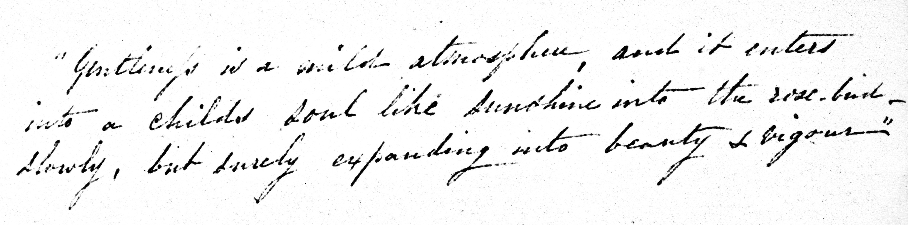

Appendix A
Epigraph

“Gentleness is a mild atmosphere, and it enters into a childs soul like sunshine into the rose-bud — slowly, but surely expanding into beauty & vigour”
This quotation is written on a flyleaf of the diaries. It is taken from an early parenting manual, The Mother’s Book, by Lydia Maria Child (1802–1880),1 who also wrote the highly successful American Frugal Housewife: Dedicated to Those Who Are Not Ashamed of Economy (1829). She would later become known for her anti-slavery writing.2
A comparison of the handwriting in the quotation from Child with that of Anna Whistler’s letters corroborates that the handwriting in both is that of Anna Whistler.
The epigraph follows the New York Public Library’s book plates, on the inside cover of her diaries, which read “Anna Palmer Draper Fund, to the memory of her father, Courtland Palmer Sr.” and “Presented by Mrs. Henry Draper to the New York Public Library.” The page with the book plates has the library stamp of SEP 26 1908.
Notes
1 Mrs. [Lydia Maria] Child, The Mother’s Book (Boston, MA: Carter, Hendee & Babcock; Baltimore, MD: Carter, 1831), p. 2.
2 Encyclopedia Britannica Online, s.v. “Lydia Maria Child,” accessed November 15, 2020